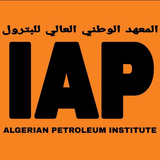
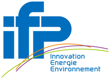
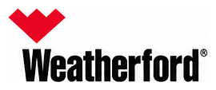
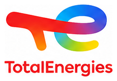
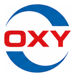
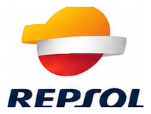

What makes RWS different
How RWS positions itself, and what sets it apart.
Not against the giants. Before them, and after them.
The detailed studies of the industry are made with the software of the large service companies: SLB, Halliburton and Baker Hughes. RWS replaces none of it. It works on both sides: it prepares the people who will use that software, and it helps the people who must decide from its results.
Students
RWS is made for students at institutes such as IAP or IFP School. They learn the whole chain, from the reservoir to the surface, and reach the heavy software already speaking its language.


The giants
SLB, Halliburton, Baker Hughes: their simulators carry the detailed studies. RWS does not compete with them.
Managers
RWS is made for managers at operators such as Sonatrach who no longer practise simulation. They follow a study, check an order of size, and decide.
What the giants gain
More trained users
Every student trained on RWS is a future user of the heavy software, and needs less time to be productive on it.
Clients who understand
A manager who can read a study commissions it with confidence and trusts its results. RWS aims to bring the giants more clients, not to take any.








RWS is independent. It has no affiliation with the companies and institutes shown on this page; their names and logos describe the sector, and their trademarks belong to their owners.
Six choices that set RWS apart
One model, not three
Reservoir, wells and surface are computed together in one program: a change in one shows in the others.
It teaches while it computes
105 lessons, an encyclopedia and worked examples are inside. Each result explains itself from its own numbers.
It ends with a decision
Each action is valued in money: cost, value, payback, break-even price. The manager leaves with a one-page brief.
Three languages, Arabic included
The program speaks English, French and Arabic, with the same pages in each.
Free for students, open to all
Students pay nothing; a professional key costs 50 USD. RWS is free software under the GNU GPL, and it works without the internet.
It says what it does not know
552 automatic tests, comparisons with published cases and OPM Flow, and a plain list of what is not yet verified.
Next page
Four levels →